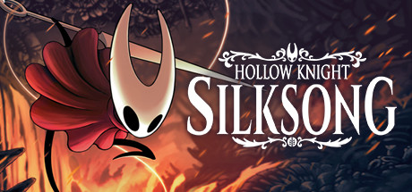

¡Los títulos más esperados de 2024 ya están en camino!
2024 será un año impresionante para los videojuegos, con títulos que prometen revolucionar la industria.
Aquí te dejamos algunos de los lanzamientos más esperados para que prepares tu consola y te asegures de ser el primero en disfrutarlos.
- Final Fantasy VII Rebirth (PS5) ¡La saga continúa! En esta segunda parte del remake, Cloud y compañía vivirán nuevas aventuras en el vasto mundo de Gaia.
- Suicide Squad: Kill the Justice League (PC, PS5, Xbox Series X|S): El Escuadrón Suicida toma el protagonismo en un juego lleno de acción en el que deberán enfrentarse a versiones corruptas de los héroes de la Liga de la Justicia.
- Avowed (PC, Xbox Series X|S):Un RPG épico desarrollado por Obsidian, ambientado en el mundo de Eora. Sumérgete en la magia y el combate mientras exploras un universo lleno de secretos.
¡Reserva ahora y prepárate para vivir una experiencia inolvidable!

Juegos indie imperdibles para 2024 y 2025
El mundo de los videojuegos indie sigue creciendo, y 2024/2025 traerá títulos increíbles que no te querrás perder.
Aquí te dejamos algunos de los juegos indie que están llamando la atención y que llegarán próximamente.
Juegos indie recomendados:
- Hades II (PC, consolas): La esperada secuela del aclamado roguelike de Supergiant Games. Adéntrate nuevamente en el inframundo, esta vez con una historia centrada en Melinoë, la hermana de Zagreus.
- Hollow Knight: Silksong (PC, Nintendo Switch): Los fans han estado esperando esta secuela durante años, y parece que 2025 será finalmente su año. Prepárate para un nuevo viaje lleno de desafíos en el reino de Hallownest
- The Plucky Squire (PS5, Xbox Series X|S, Nintendo Switch): Un encantador juego de aventuras donde los personajes saltan entre los mundos de un libro ilustrado y el mundo real. Es visualmente impresionante y mecánicamente innovador.
¡Mantente al tanto de estos lanzamientos y descubre lo mejor de la escena indie!

Los juegos más esperados de 2025
Aunque todavía queda mucho por saber sobre los lanzamientos de 2025, ya hay algunos títulos que están generando mucha expectación.
Aquí te dejamos un adelanto de los juegos que están en desarrollo y que llegarán en 2025
Próximos juegos para 2025:
- Grand Theft Auto VI (PC, PS5, Xbox Series X|S):Rockstar Games promete llevar la saga GTA a nuevas alturas con un mundo abierto aún más grande, detallado y dinámico.
- Star Wars: Eclipse (PC, PS5, Xbox Series X|S): Un juego de acción y aventura ambientado en la era de la Alta República, desarrollado por Quantic Dream, donde las decisiones impactarán el desenlace de la historia.
- The Witcher 4 (PC, consolas):Aunque aún no se ha revelado mucho, CD Projekt Red ha confirmado que un nuevo juego de The Witcher está en desarrollo, lo que tiene a los fans de los RPG muy emocionados.
¡Sigue nuestro blog para más actualizaciones sobre los lanzamientos de 2025 y más allá!